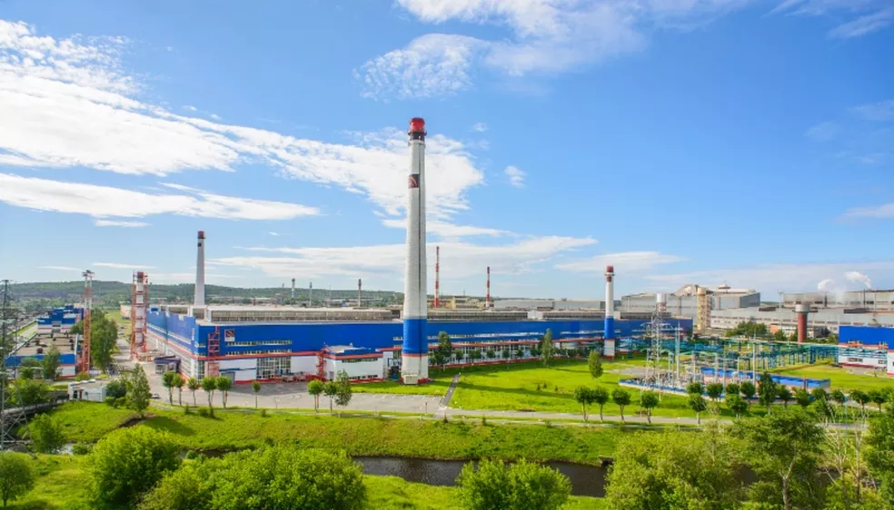

Rússia interrompe fornecimento de gás para polônia e bulgária
A Polônia e a Bulgária foram informadas nesta terça-feira (26) pela companhia estatal russa Gazprom que seu fornecimento de gás natural russo seria interrompido a partir de quarta-feira.Os dois países, assim como outros da União Europeia, recusaram-se a pagar pelo gás natural em rublos, uma exigência de Moscou para estabilizar e impulsionar sua moeda diante das sanções de países do Ocidente.Além disso, a Polônia tem oferecido grande apoio à Ucrânia – é a nação que acolheu o maior número de refugiados da guerra, serve de rota de transporte para armas enviadas por países do Ocidente à Ucrânia e, nesta semana, confirmou que enviará tanques para Kiev.
O primeiro-ministro polonês, Mateusz Morawiecki, afirmou que Moscou estava tentando chantageá-lo, mas garantiu que seu país havia se preparado e diversificado suas fontes de energia. Segundo ele, as instalações de armazenamento de gás polonesas estão 76% cheias. A ministra do Clima da Polônia, Anna Moskwa, afirmou: "Não haverá falta de gás nos lares poloneses."A Polônia recebe mais de 45% de seu gás da Rússia por meio do gasoduto Yamal, mas sua geração de eletricidade depende mais da queima de carvão do que do gás. O Yamal transporta gás natural russo para a Polônia e a Alemanha, por meio de Belarus.
A empresa polonesa de gás natural PGNiG anunciou que a Gazprom deixaria de fazer entregas na Polônia a partir desta quarta-feira. No Twitter, a companhia escreveu: "A empresa monitora a situação e está preparada para vários cenários".A Polônia também importa gás por meio de portos no Mar Báltico e planeja começar a receber gás da Noruega no final deste ano, após a conclusão de um gasoduto de 900 quilômetros – Varsóvia espera que a Noruega possa fornecer cerca da metade do gás de que o país necessita.